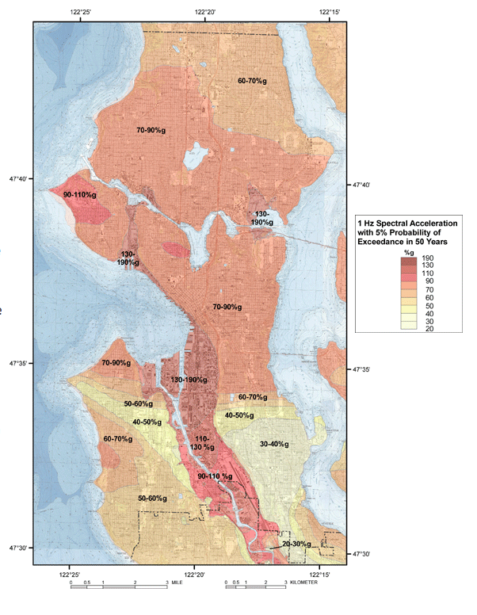

"Much of the damage caused by earthquakes could be avoided with a short time to prepare, and the Pacific Northwest is already most of the way there."
Earthquakes are undeniably cataclysmic disasters which afflict many parts of the world. They happen suddenly, and we have no way of naturally sensing them before they occur. To weather an earthquake, it is imperative to get to a safe place, but that is often only possible with time to prepare. There are three major phases in communicating an earthquake alert to the public: first the earthquake must be detected, then the results must be processed, and finally the alert must be broadcast. Modern advances in seismic network technology have made each of these steps possible, but an adequate Earthquake Early Warning (EEW) system has yet to be implemented in the Pacific Northwest. Furthermore, the region is overdue for a record-breaking earthquake -- an event forecast to be the most devastating disaster to hit North America in over 300 years (Schulz).
As it stands now, if the Juan De Fuca plate (located just off the Washington/Oregon coast) were to slip, causing a massive earthquake in the Pacific Northwest, Seattle would have no warning. The S-waves that cause shaking would roll through Seattle, catching millions of people unaware and unprepared. The precious few seconds required to get under a desk, get out of an old building, or move away from a window would be utterly lost. Trains would derail, elevators would trap their passengers, cars would crash, and gas mains would rupture. Much of this senseless death and destruction could be avoided with a good EEW system. To detect earthquakes, seismologists use contraptions called seismometers. Earthquakes radiate P-waves and S-waves, the former of which is faster and virtually undetectable by humans, the latter of which do all the damage. Seismometers can detect P-waves traveling through the earth’s crust giving as much as a minute to prepare before their unwelcome cousins arrive (Schulz). The seismometers in an EEW system must be able to quickly gather data and transmit it to a location where it can be further processed. They must always be running and connected to ensure the timely delivery of their results. The detected results must then be processed to prevent false alarms and prepare the data for broadcast.
According to Bill Steele, who we interviewed to find out more about EEW systems, it takes four networked seismometers to guarantee that an earthquake is actually happening. This check is very important because every false alarm drastically undermines the reliability of the system. In addition to voiding the system of false positives, processing must be fast and efficient. Every second lost to processing is another second people aren’t savvy to the impending calamity. Dissemination of the alert is the final phase in an EEW system, and the ultimate test of its viability. If the earthquake is detected and processed but not broadcast, the entire system is pointless. This also happens to be the only piece missing from America’s EEW system. Seattle alone has over 40 Networked Seismometers, a great deal more than enough to confirm an earthquake, and the Pacific Northwest as a whole has far more (Seismogram List). Though Seattle has a City-Wide alert system in place, it does not handle earthquakes and comes with a whole slew of problems, including gaps in coverage, slow alerts, and no guarantee that the system will work in a disaster situation (AlertSeattle FAQ). The Wireless Emergency Alert system has been implemented across the United States, but it does not broadcast alerts for earthquakes either, and has massive lags in transmission time (Gonzales). Much of the damage caused by earthquakes could be avoided with a short time to prepare, and the Pacific Northwest is already most of the way there. The only thing it needs is a means of getting the alert out to the public.
"As it turns out, our cell phone networks and the hardware that they use are not designed to be able to push to millions of people simultaneously”.
Through meeting with experts who work with early warning systems we were able to better assess the challenges faced within this design space. Victor Balta, Director of Media Relations and chair of the Crisis Communication team at UW as well as Bill Steele, Director of Communications in Outreach for the Seismic Network, acted as our two experts.
Victor Balta and his team’s job is to alert the University of Washington of disasters and crime via messages to phones, emails, Twitter, Facebook and their blog. In regards to UWs emergency alert system, Victor let us know that, “It’s a powerful tool, when we send out an alert to everyone on the list, it’s over a hundred thousand email addresses and cell phone numbers that receive the message.” However, when discussing communications during or after an earthquake, things became more uncertain. Mr. Balta explained that they don’t know what it would do to their ability to send a message. Their power systems are backed up enough, but if cell towers go down it could seriously impact their ability to broadcast the alert. Bill Steele was another expert we consulted during the design process. He is part of the ShakeAlert team, working on an earthquake early warning system for the West Coast of the United States. Mr. Steele tells us that currently there is a big expansion happening for the incoming earthquake early warning system. They have had to build out the networks to be able to trigger in seconds in order to send out an alert. To do this, we learned that it takes four stations for the P-wave to be detected. Once it has been triggered, it only takes two seconds to process the data, locate the earthquake, estimate the magnitude and intensity of the shaking and push out an alert. Currently it takes 10 to 15 seconds for 4 stations to register the P-waves and confirm the incoming earthquake but as more stations are added this time will drop. That is why so much of their resources are going towards adding new seismometers to fill in the gaps.
In terms of sending out notifications via cell phones, Mr. Steele says that they are running into roadblocks. He told us that, “as it turns out our cell phone networks and the hardware is not designed to be able to push to millions of people simultaneously”. His team is now working with the Alliance for Telecommunications Industry to create the next generation of requirements for cell phones and networks so that their EEW system can be implemented through phones. When shown the SeismoCard, Mr. Steele commented “Sure, that is obviously a doable thing and we could send signals out”. This was really exciting news for our team.
In fact, most experts we talked with said that our design was viable. In the User Testing section of this page we will prove that it is not only viable but a tested and perfect solution to the problem as it stands today. While discussing UW alerts opt out feature with Victor Balta, we garnered a surprising insight. He Bill Steele describes the danger of earthquakes during our contextual inquiry said that even if someone has opted out of the alert system for some reason, there are probably still several more people in that area who have not, and if all of them get up and dart for the door at once, everyone’s going to know something’s not right. While this doesn’t change our design, it was a point we had not considered or planned to ask and was the first instance where we really saw the value in talking with others to learn what they had to say about the problem space and intervention our team was working on.
"The United States does not have any form of EEW system implemented anywhere”.
The existence of an EEW system is implied on many websites regarding the Wireless Emergency Alert WEA system in the United States. Calalerts.org, for example, a website partnered with FEMA and the California Governor’s office of Emergency Services, has a section on the different types of alerts WEA can send. A portion on its capabilities reads, “alerts issued when an imminent threat to life or property exists in your area, including severe man-made or natural disasters such as earthquakes, wildfires, hurricanes, and tornadoes” (Wireless Emergency Alerts). Additional references to working EEW systems exist on other websites about WEA, such as ctia.org, and other alert systems such as AlertSeattle also imply such functionality (AlertSeattle FAQ). After reading these websites, we assumed WEA had some sort of EEW capability, and the need for an intervention would be far less important. WEA has its problems, but it’s a good system for the most part – or so we thought. It wasn’t until we started digging into more obscure literature, such as (very long, very dry) reports from the FCC and DHS that we came to a startling realization: The United States does not have any form of EEW system implemented anywhere (Gonzales).
In an earthquake, seconds save lives (Fritz and Steckelberg). With adequate warning, people indoors can get under tables and away from windows. Those outdoors can get to open terrain while avoiding unstable building facades and utility poles. Anyone driving a vehicle can bring it to a stop, preventing high-speed collisions. Those in control of gas and water mains can shut them off, preventing post-quake explosions and saving water to fight fires. With a few moments of warning, all these things can be easily accomplished, greatly reducing the impact of an earthquake.
Though several massive fault lines lie within and around its borders, the United States is lagging far behind the rest of the world in terms of earthquake preparedness. Many countries have EEW systems, and Japan, Romania, Mexico, Taiwan, and Turkey, in particular, have attached them to their cell networks (Gonzales). These systems take considerable funding and political pressure to create, both of which require earthquakes to be in the forefront of the public discussion (Burkett). Unfortunately, the past has shown that earthquakes are largely ignored politically until a devastating one lays waste to the country in question. Japan did not install their EEW system until “after the 1995 Kobe earthquake killed 6,400 people,” Mexico ignored EEW systems until the “1985 Mexico City earthquake killed 10,153,” Turkey did not consider them until the “1999 Izmit earthquake killed 17,127,” and the list goes on (Burkett). Because earthquakes do not happen very often, it is easy to ignore them in place of smaller everyday struggles. This myopic perspective is usually only shaken by a truly devastating earthquake, but the Pacific North West cannot afford to wait until after the big one hits, as there will be little left to salvage if it catches us unawares (Shulz).
There are many seismometers in the United States with plenty of seismologists to staff them, but there is no alert infrastructure in place to warn people when an earthquake is going to happen. As it stands now, earthquakes are detected before they happen, but no one receives the results. The standard avenue for mass public alert in the United States is the WEA system, but that can have delays of up to 12 minutes, which is far too long to wait before alerting people to an impending quake (Gonzales). This is a massive failing on the part The aftermath of the Kobe Japan earthquake of our country, one which must be quickly remedied. An initiative called ShakeAlert has been underway for the past decade to implement a functional EEW system for the west coast, but it is not receiving the funding it needs to be effective (Tarantola). The program “costs a measly $16 million each year to build and operate, but the USGS has only been given $10 million each year,” which is dramatically slowing its progress (Niler). $16 million is pocket change on the federal level, and it seems even smaller when compared to the $5.3 billion earthquakes cost the United States annually (Tarantola). Even if ShakeAlert were fully funded, it is still years away from completion, and the Juan De Fuca plate could slip at any moment.
We want to intervene in this space to create a functional EEW system for the Pacific Northwest. We cannot afford to put this issue off any longer, we need to be ready when the big one comes. A robust seismic network and processing infrastructure is already in place in the region, the only thing left to implement is a public alert system. While other countries have used phones as their primary avenue of communicating earthquake alerts, we believe there is room for innovation in this area. In this space, an effective intervention would save countless lives.
"Our intervention idea was a credit card shaped earthquake early warning system that alerted the user of an incoming earthquake."
The intervention we decided to make was a way to accurately and quickly relay to the public that an earthquake is coming. We started off with two main ideas, an internet of things device attached to the ceiling of buildings that had the ability to beep and alert the building to drop cover and hold on. We temporarily called this the ‘smoke detector’. Our other intervention idea was a credit card shaped earthquake early warning system that also alerted the user of an incoming earthquake.
We weighed out the pros and cons and decided that users should be able to have a warning even when they are not in a building fitted with a EEW, as well as when they are outdoors and on the road. To accomplish this, the device had to be with them wherever they went. This lead us to the conclusion that the SeismoCard was the best option.
Our design for the SeismoCard is to have it be the length and width of a credit card and not much thicker, just the right size to fit into any wallet or billfold. It will finally provide a way to let people know when an earthquake is coming and encourage them to reach safety. The card consists of several electronic parts: an HF radio receiver, an antenna, a battery, a small speaker, a vibration motor, an LED, a button, and a microprocessor. The card will constantly be checking for radio input on a preconfigured channel. When it receives a transmission on that channel, it will search for a code in the signal to activate the alarm system. If that code is validated, the card will let out several loud bleats in a certain configuration, vibrate, and switch on the LED. This will continue for two minutes.
In addition to the electronic elements used to sound the alarm, the card will also have visible instructions printed on both sides. The front will have several large pictograms meant to provide instructions on what to do when the card begins to sound the alarm. These will ensure the user knows to stay away from windows and large objects, get under furniture, etc. The back will have more detailed instructions regarding what to do after an earthquake. The LED will be positioned so that it illuminates the instructions on the front of the card to make reading them easier in low-light situations.
The SeismoCard solves many of the problems one may face in the moments before an earthquake. As mentioned, it will be the size of a credit card. This will allow users to keep the device in their wallet at all times. While one may forget to put on a wearable or not have access to a smartphone, adults always have their wallets near them. Since children do not carry wallets, we assumed that if a child was not old enough to carry a wallet they most likely will be in the care of an adult who can carry a SeismoCard.
Inside the card itself will be a watch battery. We chose these types of batteries because they last for a long time and are thin enough to place in a card. We also wanted the user to be able to put the device in their wallet and essentially forget about it until activation during an earthquake which is why we chose a battery method instead of a charging method to power the device.
To broadcast the signal, we chose High Frequency (HF) radio waves. This was done because they do not require intermediate radio towers. In an aftershock situation, this would be very important if the radio towers in the region became inoperable. Radio waves are also very low tech, well-studied and cheap, making them the ideal choice.
In order to eliminate the risks of false alarms the microprocessor will look for a specific code in the HF signal before activating. It also is what controls the LED, speaker and vibration motor. When the signal is received, the SeismoCard will beep, vibrate and the LED will come on. We chose the sounding feature so that if a user is not in the room with their wallet, they can still hear the sound. The speaker will be on the top right to reduce the effects of being muffled by the wallet as much as possible. By installing a vibration motor, we can ensure that people with hearing loss will still be able to use our device.
Lastly, it will light up. This is in case it is dark when the user is trying to find the card. On the front and the back of the card we included: picture instructions and a link to our website. The picture is for anyone who is a non-English speaking user. It will still allow them to understand what to do quickly and efficiently. It also is a quick way to transmit information which will make it a useful feature for all users, as there are sometimes only seconds between the warning and the earthquake.
"We wanted the card to not only be able to make noise, flash a LED light, and vibrate, but also have the capacity to be remotely activated.""
In order to prototype this design, we split up the components into two main parts, the exterior design and the interior design. Starting with the exterior design for the front and the back of the card, we first decided what information we considered should be included in the limited space the card offered us. This included highlighting three different general scenarios (outside, inside, and in a vehicle) that a user is likely to find themselves in when an earthquake strikes along with a “dos and don'ts” list of what to do after the earthquake stops. Once we decided onthisinformation,wecameupwitha Sizingourtechnicalcomponents simple design on Photoshop which was then printed and glued onto a slice of cardboard to help us get a sense of scale for our device
The interior design was not quite as simple, however. We wanted the card to not only be able to make noise, flash a LED light, and vibrate, but also be remotely activated. To accomplish this, we used an Arduino circuit board along with a few other technical elements which we coded on a laptop. This was the hardest part of the prototyping process, but it paid off once we got our battery powered circuit to work the way we intended.
After our technical components were working, we placed then in a makeshift case made out of paper plates, bottle caps, and tape in order to hold them all together and test if they would work inside a bag or backpack. The size of this case was based on our original slice of cardboard which had the same dimensions as a typical credit card. This combined prototype worked very well when we tested it, however we ran into problems with powering the card. The battery we used easily came unattached and caused our card to be extremely thick and inconvenient to carry. This is something we would later deal with as we iterated on the design.
"User testing was conducted through surveys and interviews. The results of these tests provided important insight into the form our EEW system should take and how the public responds to carrying the SeismoCard with them.""
The SeismoCard was designed around the idea that it could be kept in a wallet similar to a credit card. This was done because our team hypothesized that most people carry cards on them, keep those cards in a wallet, and store their wallet within easy reach at most times. To test this hypothesis, user testing was conducted through surveys and interviews. The results of these tests provided important insight into the form our EEW system should take and how the public responds to carrying the SeismoCard with them.
The interior design was not quite as simple, however. We wanted the card to not only be able to make noise, flash a LED light, and vibrate, but also be remotely activated. To accomplish this, we used an Arduino circuit board along with a few other technical elements which we coded on a laptop. This was the hardest part of the prototyping process, but it paid off once we got our battery powered circuit to work the way we intended.
After our technical components were working, we placed then in a makeshift case made out of paper plates, bottle caps, and tape in order to hold them all together and test if they would work inside a bag or backpack. The size of this case was based on our original slice of cardboard which had the same dimensions as a typical credit card. This combined prototype worked very well when we tested it, however we ran into problems with powering the card. The battery we used easily came unattached and caused our card to be extremely thick and inconvenient to carry. This is something we would later deal with as we iterated on the design.